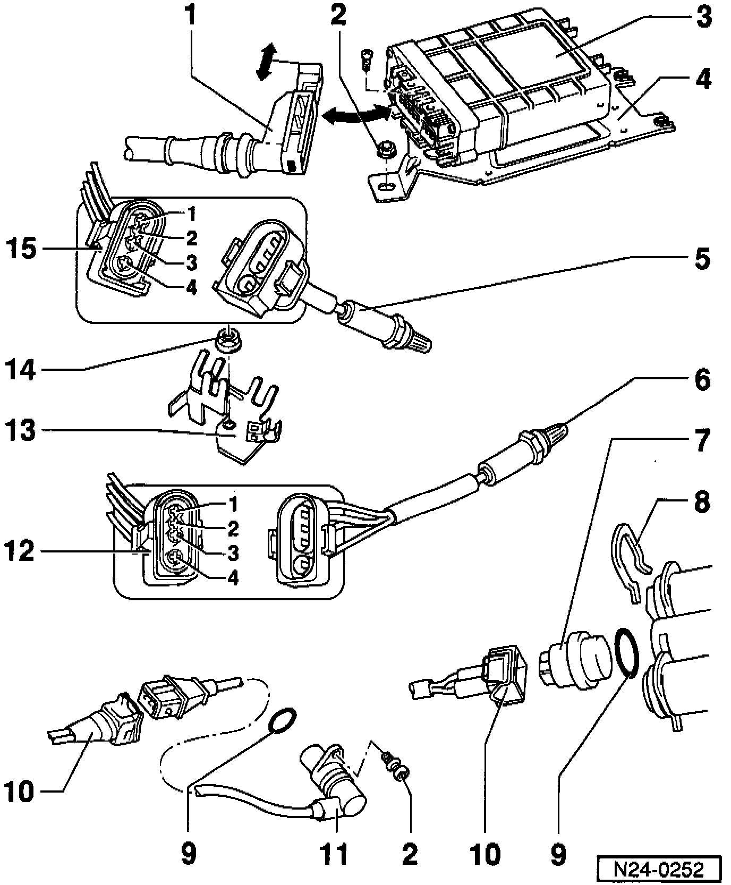

Coolant Temperature Sensor/Switch (For Computer): Service and Repair
Removing and Installing:- Engine Control Module (ECM).
- Heated Oxygen Sensor (HO2S).
- Engine Coolant Sensor (ECT).
- Engine Speed (RPM) Sensor.

1. Connector
- Only disconnect or connect with ignition switched off.
- Unlatch to disconnect.
2. 10 Nm (7 ft lb)
3. Engine Control Module (ECM) -J220-*
- Location: in plenum chamber, right side.
- For fuel injection system oxygen sensor control, EVAP canister purge regulator valve, speed governing via fuel pump relay, idle speed control, ignition and On Board Diagnostic (OBD).
- Check ECM coding.
4. Mounting plate
- For Engine Control Module (ECM) -J220-.
5. Heated Oxygen Sensor (HO2S) 2 -G108-*
- 50 Nm (37 ft lb).
- Installation position: Three Way Catalytic Converter (TWC).
- Only grease threads with "G5"; "G5" must not get into the slots on the HO2S body.
- O2S heating voltage supply via Fuel Pump (FP) relay -J17-.
6. Heated Oxygen Sensor (HO2S) -G39-*
- 50 Nm (37 ft lb).
- Installation position: before three way catalytic converter.
- Only grease threads with "G5"; "G5" must not get into the slots on the HO2S body.
- O2S heating voltage supply via Fuel Pump (FP) relay -J17-.
7. Engine Coolant Temperature (ECT) sensor -G62-*
- Blue, 2-pin.
- For ECM.
- If necessary before removing, release pressure from cooling system.
8. Retaining clip
- Check seated securely
9. O-ring
- Replace if damaged.
10. Connector
11. Engine speed (RPM) sensor -G28-
- Installation position: cylinder block intake side.
12. Connector
- Black, 4-pin.
- For HO2S and O2S heating (before three way catalytic converter).
- Secured to rear engine mount.
13. Retainer
- For HO2S, HO2S 2, and Knock Sensor (KS) 1 connectors,
14. 20 Nm (15 ft lb),
15. Connector
- Brown, 4-pin,
- For HO2S and O2S heating (after three way catalytic converter),
- Secured to rear engine mount,